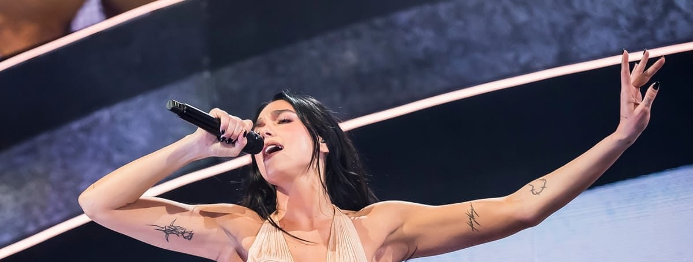
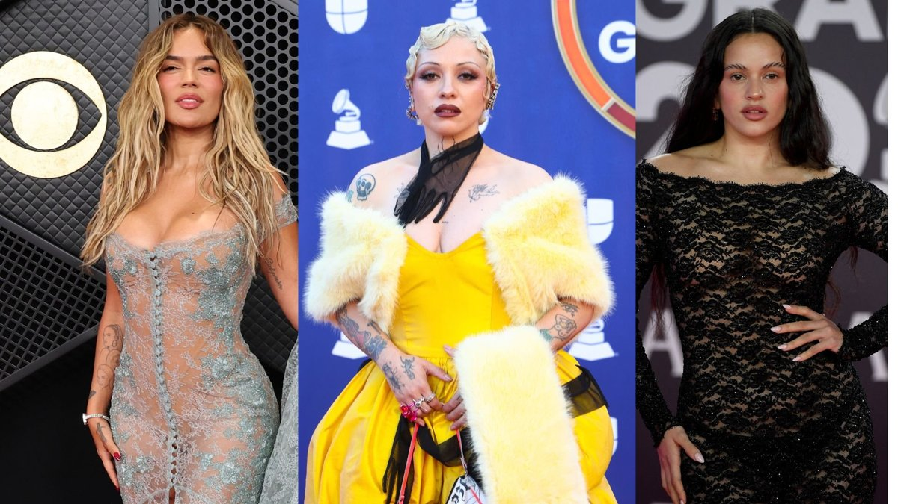
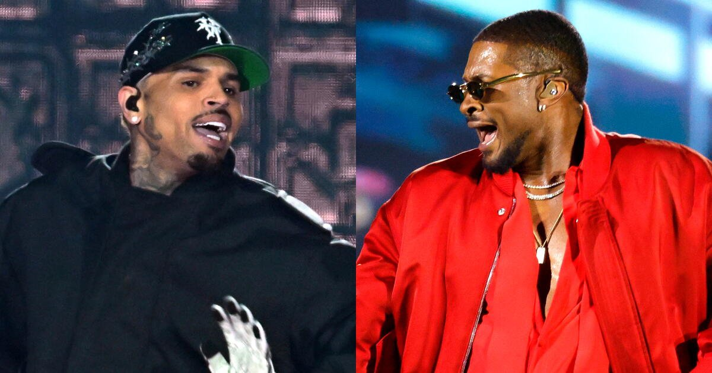
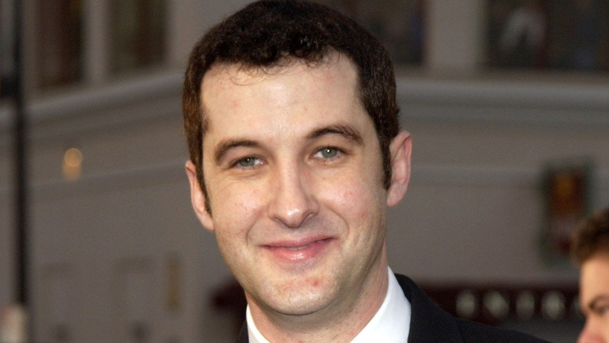

Coachella 2027: Dua Lipa, Tame Impala and SZA will headline, with Madonna back in the dance tent

Goldenvoice released the full lineup Wednesday. Dua Lipa headlines Friday, Tame Impala Saturday and SZA Sunday, across both weekends, April 9–11 and 16–18 in Indio. Lipa becomes the first British solo woman to headline the festival, and it’s her first real Coachella set. Tame Impala headlines for the second time, after 2019.
Rolling Stone reports that the reveal was rushed after SZA all but confirmed it herself on Instagram, teasing “SZAChella” along with a new album and tour next year. Madonna returns to the dance tent 20 years after her Confessions set there. Daddy Yankee gets a special slot, and Phoebe Bridgers, Weezer, Robyn, Zara Larsson, Jisoo and Kehlani are also on the bill. Passes go on sale Friday, Nov. 13, at noon PT.
The Latin Grammys are tonight, with Karol G and Rosalía leading a year dominated by women

The 27th Latin Grammys air live tonight at 8 p.m. ET (7 p.m. CT) from the MGM Grand Garden Arena in Las Vegas, on Univision, UniMás, Galavisión and ViX. Producer Édgar Barrera leads with 10 nominations. Karol G, Rosalía, Jorge Drexler and Argentine duo Ca7riel & Paco Amoroso have seven each.
Five of the 10 Album of the Year nominees are women, including Karol G’s Tropicoqueta, Rosalía’s LUX (Complete Works), Anitta, Mon Laferte and Silvana Estrada. Bad Bunny isn’t in the running because his last album came out before the eligibility window. Daddy Yankee is this year’s Person of the Year, the first urbano artist to get the honor, and will perform along with Karol G and Anitta.
Usher and Chris Brown cancel two more stadium shows as feud reports heat up

Ticketmaster now lists the Nov. 16 show at SoFi Stadium in Inglewood and the Dec. 6 show at Miami’s Hard Rock Stadium as canceled, with full refunds. That makes six canceled dates on the co-headlining R&B Tour. Neither star nor Live Nation has explained why.
The cancellations follow TMZ’s report of a heated backstage argument before last week’s Atlanta show, which started about three hours late, had sound problems, and didn’t have the two singers performing together. TMZ says Brown wanted to wait for fans stuck in traffic and Usher wanted to start on time, and that things are “still icy.” The tour is still set to end in Tampa on Dec. 12.
Anthony Clark, star of Yes, Dear, dies at 62

Clark died Tuesday, his Yes, Dear co-star Mike O’Malley announced Wednesday. Deadline reports the cause was complications related to pneumonia. “He was a hilarious guy,” O’Malley wrote, adding that they had last spoken three weeks ago.
A Boston stand-up favorite, Clark starred in NBC’s Boston Common and then played Greg Warner for six seasons and 122 episodes of CBS’s Yes, Dear (2000–06), the “little comedy that could” that kept surviving cancellation. He also starred in Soul Man.
Bottom of the news
- Jamie Dornan says he “actually cried” when he was cast as Aragorn in Andy Serkis’s The Hunt for Gollum, which he wrapped three weeks ago; it opens Dec. 17, 2027.
- South Park brought back Tweek and Craig for a Heated Rivalry-inspired episode.
- Netflix has set a Russell Brand documentary from the producers of Jimmy Savile: A British Horror Story, days after his rape sentencing.
- FX renewed Adults for a third season of 16 episodes, twice the length of the first two.
- Kate Berlant and John Early will co-host the 2027 Film Independent Spirit Awards.
- Druski’s SNL episode drew 5.6 million viewers on NBC.
- Peacock’s The Good Daughter, with Rose Byrne and Meghann Fahy, premieres today to mixed early reviews.